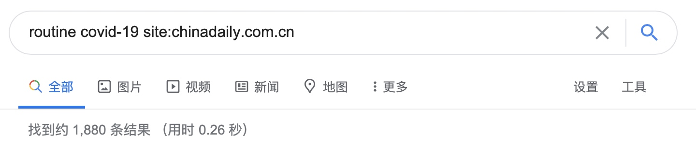
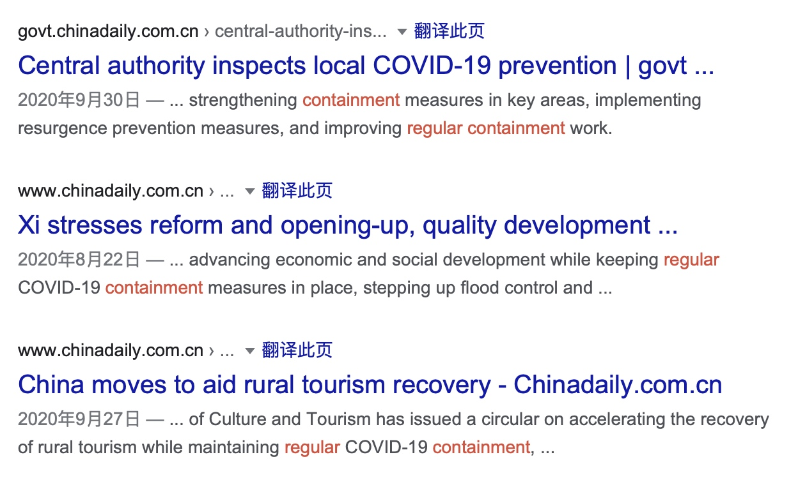
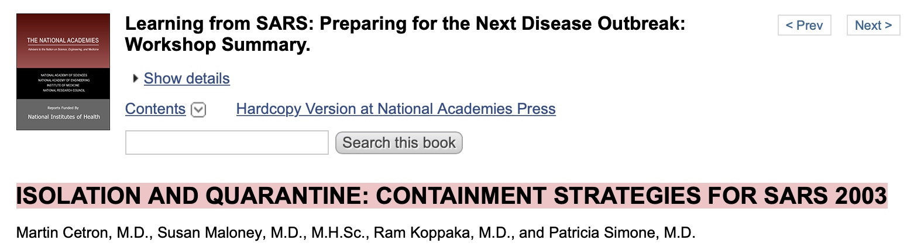
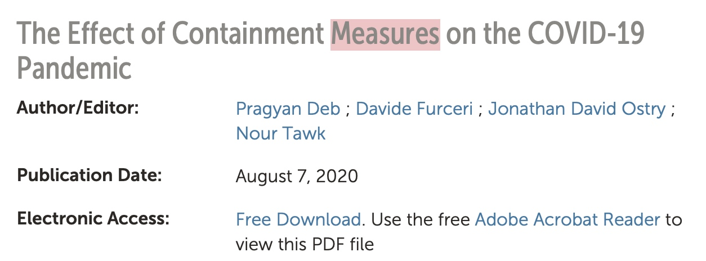

从「常态化防控」说开去——兼论译法的历时性与共时性
最近和同行聊天，聊到了「常态化防控工作」这个表达的处理，讨论很有收获，也拓展了对类似问题解决的思路。贯穿全年的疫情，肯定会成为 MTI、CATTI 等翻译相关考试的热门必考内容，聊聊我对这个问题的一些思考，肯定对各位备考 CATTI、MTI 的读者有一定的帮助。这第一篇文章就献给这个比较功利的目的吧。
需要先说明，翻译从来也不会有「标准答案」，没有「对」与「错」，只有是否「合适」。讨论过程中，我和同事也交流了其他的处理方法，均以语境、场合、上下文为转移，一种情境下最理想的解决方法，放在其他情境下就有可能行不通。正因如此，我才在标题中加了「历时性与共时性」这一点，顺便探讨这个说法自产生以来译法的流变，分享寻找理想译法过程中参考的英语源语表达，以飨读者。
「常态化防控」被我记挂，源于今年的政府工作报告（下简称 GWR-2020，以最终发布版为准）。GWR-2020 中关于「常态化防控」的，有这么几句：
CN: 迅速扩大医用物资生产，短时间内大幅增长，抓好生活必需品保供稳价，保障交通干线畅通和煤电油气供应。因应疫情变化，适时推进常态化防控。
EN: We expanded production of medical supplies by a large margin within a short time, ensured supply and price stability of daily necessities, and maintained smooth transportation on trunk lines, as well as stable supplies of coal, electricity, oil, and gas. In response to changing covid-19 dynamics, we have adopted regular prevention and control measures in a timely manner.
CN: ……在疫情防控常态化前提下，坚持稳中求进工作总基调，坚持新发展理念，坚持以供给侧结构性改革为主线，坚持以改革开放为动力推动高质量发展，……
EN: […] while carrying out regular covid-19 control, continue to follow the general principle of pursuing progress while ensuring stability, apply the new development philosophy, pursue supply-side structural reform as our main task, and draw momentum from reform and opening up to promote high-quality development; […]
CN: ……下一阶段要毫不放松常态化疫情防控，抓紧做好经济社会发展各项工作。
EN: In the next stage, we will not let up on any front of our long-term fight against covid-19, nor will we lose any time in advancing China’s economic and social development agenda.
CN: 在常态化疫情防控下，要调整措施、简化手续，促进全面复工复产、复市复业。
EN: While continuing to implement routine covid-19 control, we will adjust relevant measures and simplify procedures to boost the resumption of work, production, and business activities.
「常态化疫情防控」最早是 4 月 8 日的常委会上强调的，属于中文语境下的特色词汇。正因如此，英语本身可资借鉴的说法很少，只能自行创造。GWR-2020 给出的这四个译法，最突出的区别主要是前面的「常态化」处理不同，两个 regular，一个 routine，一个 long-term。如何取舍，取决于对「常」的理解：
疫情防控常态化，就是要根据国内外疫情新形势，及时完善疫情防控策略和应对举措，把重点放在外防输入、内防反弹上来，保持我国疫情防控形势持续向好态势。内防反弹，要建立健全及时发现、快速处置、精准管控、有效救治的常态化防控机制，严格落实早发现、早报告、早隔离、早治疗要求。外防输入，要加强口岸卫生检疫，优化入境流程，落实入境人员集中隔离要求，快速精准识别和管控风险源、风险点，筑牢严密防线。在确保疫情防控到位的前提下，加快恢复生产生活秩序，做好经济社会发展各项工作。
每日一词 ∣ 常态化疫情防控 regular epidemic prevention and control
“面对严峻复杂的国际疫情和世界经济形势，我们要坚持底线思维，做好较长时间应对外部环境变化的思想准备和工作准备。
要统筹推进疫情防控和经济社会发展工作，外防输入、内防反弹防控工作决不能放松，经济社会发展工作要加大力度。要坚持在常态化疫情防控中加快推进生产生活秩序全面恢复，抓紧解决复工复产面临的困难和问题，力争把疫情造成的损失降到最低限度，确保实现决胜全面建成小康社会、决战脱贫攻坚目标任务。”
要之，常态化防控的特点，就是「外防输入、内防反弹、时间较长、统筹发展」。「外防输入、内防反弹」，意味着要将防控措施「常规」化，定期做、频繁做，「统筹发展」，意味着防控措施要「日常」化，成为日常生活的一部分，保障日常生活正常运行。「时间较长」文意自明，不多解释。按照这种理解，这三种译法若放在更普适的语境中，最先排除的就是意思最狭隘的 long-term。再说回前两者，查字典（此处以 OALD 为例，仅摘录相关释义）：
Regular
- Done or happening often
- Do you take regular exercise?
- Domestic violence is a regular occurrence in some families.
- [only before noun] usual
- I couldn’t see my regular doctor today.
- On Monday he would have to return to his regular duties.
- It’s important to follow the regular procedure.
- lasting or happening over a long period
- a regular income
- She couldn’t find any regular employment.
Routine
- done or happening as a normal part of a particular job, situation or process
- routine enquiries/questions/tests
- The fault was discovered during a routine check.
- not unusual or different in any way
- He died of a heart attack during a routine operation.
从释义的角度来看，regular 涵盖了「常态化」三种可能的含义，放在哪种语境下问题都不大，routine 则只侧重「常规」，长期性、日常性体现均不足，相对来说不如 regular 好。这一点在外宣选词中也得以体现，以 China Daily 为例，结果数有显著差距：

这还不算 routine 的搜索结果中，其实并没有什么和「常态化防控」相关的结果。综合搜索结果和词义辨析，regular 其实是最好的解决方案。
说完「常态化」，再来说说「防控」。最直观的处理方法，自然是 prevention and control，查 China Daily，扑面而来的基本也都是这个结果。但也有例外，如前面 GWR-2020 中第二、四句，都只用 control。这个译法也有情可原。各国的疾控中心，虽然名字叫 Center for Disease Control and Prevention，但缩写都是 CDC，只用 control 也有情可原。
特别说明：CDC 这个缩写中没有体现 prevention，其实是有其历史原因的。美国 CDC 最早是二战时的疟疾防控办公室（Office of National Defense Malaria Control Activities, 1942; Office of Malaria Control in War Areas, 1942–46）；后来改名为「传染病中心」（Communicable Disease Center, 1946–67），缩写正好也是 CDC，1970 年改名为 Center for Disease Control，增加了非传染病防治职能，缩写保持不变；1992 年，才在其名称中添加了「and Prevention」，强调了 CDC 在疾病预防方面的职能，但缩写仍保持不变。
On October 27, 1992, CDC’s name was changed to the Centers for Disease Control and Prevention (with “CDC” still to be used as the acronym). This change was enacted by Congress, as part of the Preventive Health Amendments of 1992, to recognize CDC’s leadership role in the prevention of disease, injury, and disability. In enacting this change, Congress also specified that the agency continue to use the acronym “CDC” because of its recognition within the public health community and among the public.
CDC: the Nation’s Prevention Agency
单用 control 而非 prevention and control，除了可以增加语言多样性、避免重复外，还可以为口译——特别是同传——节省时间。这次与同行讨论，提到「防控」除了一目了然的 prevention and control 和 control 外，还可以用 containment。查 OALD，第一个义项就与「病」有关：
Containment
- the act of keeping something under control so that it cannot spread in a harmful way
- the containment of the epidemic
之前我却一直没想到，确实是疏忽了。一查 China Daily 才发现，这个说法 WHO 早在「常态化防控」之前就在用：
At the WHO news briefing on Tuesday, Director-General Tedros Adhanom Ghebreyesus recommended countries take a comprehensive approach to contain the spread of the novel coronavirus.
“COVID-19 spreads less efficiently than flu, and it can be contained,” Tedros said.
The WHO also commended China for sharing its experience in fighting COVID-19 with other countries, helping them in preparation.
WHO: Containment of COVID-19 is possible
虽然老谭这番话从现在的角度来看完全不符合实际，他本人现在也成了密接，正在隔离，但contain / containment 在这个语境下显然可用。「regular containment」也有具体的使用案例，并且进入下半年，出现的次数也不少：

最后，就该说说「工作」了，这也是此次讨论的重点。「工作」在翻译中属于典型的抽象填充词，实际操作中，不能简单对应为 work，而是要具体情况具体分析。结合上面的搜索结果不难看出，「工作」很多时候可以进一步抽象化，融入「防控」，直接不体现，如：
湖北防控工作到了最吃劲的时候，也是一种胶着对垒的状态。
Epidemic control in Hubei has come to a most demanding stage of tug-of-war with the disease.
但有时，也需要细化、具体化，常用 measures，如 GWR-2020 第一个例子。这次与同行讨论，得出的新处理办法是 protocol，即 regular containment protocol。Protocol 最常见的意思有：
- 「外事礼宾」的那个「礼宾」，例如外交部礼宾司，即为 Department of Protocol。这个词源自法语，本指法国国家元首在正式场合与外方互动式须遵守的礼节，以及法国外交部负责此事的部门，后泛指外交礼宾流程，也可用于其他国家的相应部门。
- 《京都议定书》的那个「议定书」，即 OED 定义 2：The original draught, minute, or record of a dispatch, declaration, negotiation, treaty, stipulation or other diplomatic document or instrument; esp. a record of the propositions agreed to in a conference, signed by the parties, to be embodied in a formal treaty.
- 互联网的「协议」，如 IP = Internet Protocol。
但除这些意思外，也可指「规范」，如 OED 所写：In extended and general uses, any code of conventional or proper conduct; formally correct behaviour.（5.c.）放在疫情语境下，也包含「诊疗方案、规范、指南」的意思，如：
BEIJING — China’s health authorities have published the latest version of the “Diagnosis and Treatment Protocol for Novel Coronavirus Pneumonia.”
The updated protocol, the eighth edition, noted that the patients infected by the novel coronavirus and asymptomatic infected people are the main sources of infection.
China updates COVID-19 diagnosis, treatment protocol
The European Union’s Agency’s for Railways (ERA), the European Commission, and the European Centre for Disease Prevention and Control (ECDC) have developed the following COVID-19 railway protocol, outlining the operational guidelines for the resumption of railway operations in Europe. This protocol reflects the current status of knowledge about the COVID-19 disease and its pandemic effect. It summarises preventive measures considered effective at the date of publication, and complements measures taken by the European Commission to support Member States in re-launching mobility and tourism across Europe.
COVID-19 Rail Protocol: Recommendations for safe resumption of railway services in Europe
一处参考资料，把 measure、guideline、protocol 都集齐了，其实应该再加上一个 strategy，这样所有的备选项就都到位了，而且都有用例：
Supplement D: Community Containment Measures, Including Non-Hospital Isolation and Quarantine
Appendix D1: Interventions for Community Containment

https://www.ncbi.nlm.nih.gov/books/NBK92450/
BEIJING — China’s State Council’s inter-agency task force has released a guideline for COVID-19 containment on a regular basis in low-risk areas during the summer months.
China releases guideline for summertime regular COVID-19 containment measures in low-risk areas

The Effect of Containment Measures on the COVID-19 Pandemic
需要注意，用这几个词的理据在于，「（开展）常态化防控工作」，一般指「采取常态化防控措施」「执行常态化防控指南、规范、方案 」，需要根据上下文，决定动词搭配，以及具体可用的表达。例如，protocol 虽然听上去高大上，但却是最不好搭动词的；「中国常态化防控工作取得新进展」，可能 Regular containment measures have been well implemented in China, delivering new, remarkable progress. 具体哪些动词适用哪个名词，请查阅搭配词典。
以上的这一整套探讨过程，可能并不那么「功利」，译法对应的表述也比较稀松平常。但这些步骤，都是翻译过程中必不可少的。标题中的「共时性」与「历时性」，体现在：
- 查阅同一主题下，译入语/目的语的规范、常用、通用表达。人类经验在很多领域都是共通的。虽然某一特定概念未必在两种语言中都有直接对应表述，但组成这一概念的相应基本组分，在两种语言中有较高的概率同时存在。探索这些组分的对应表述，即为探索翻译「共时性」的最佳体现。
- 查阅不同时间，同一概念表述的流变。随着人们对某一概念的认识发生变化，对其内涵有了新的阐释，或对其原有译法表示不满，译法也会随之发生变化，反映不同的措辞要求。本文对「常态化防控工作」译法的讨论，或许无法完整体现「历时性」，但未来有机会，一定会谈到相关表述。
探究译法背后的源流，剖析译法的选词，在此基础上逐渐改进，不断更新自己的「武库」，应是每一位翻译必备的基本功。
欢迎将您的想法、评论、意见、建议发送至 harveyjanson@icloud.com，请注明「讨论」字样，我会尽量回复。
从「常态化防控」说开去——兼论译法的历时性与共时性
http://harveyjanson.github.io/2020/11/01/2020-11-01-prevention/